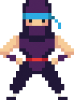
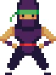
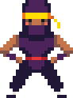

We are the Nanonauts.
Our names are Holly, Dervla, Daniel, and Sam.
Daniel - Singer extraodinaire

Daniel is the Nanonauts's singer. He likes to sing all the time - not just when he's playing with the nanonauts! His mom and dad say he learned to sing before he learned to talk!
Daniel also plays clarinet and is learning the alto saxophone.
Sam - One-man rhythm section

On some songs Sam plays the bass guitar and on some songs the drums. He loves playing in the Nanonauts but hates carrying his drum kit around.
Holly - If it's got strings, she'll play it

She started off by making homemade guitars from cardboard boxes and elastic bands until her uncle took pity on her and bought her a Spanish guiter for Christmas. After a few lessons at school she was flying!
Dervia - Keyboard maestro

Dervla has fourth grade piano but in secret prefers tp play electronic keyboards. She loves synthesizer sounds and arguing with Holly over who should play the basslines.